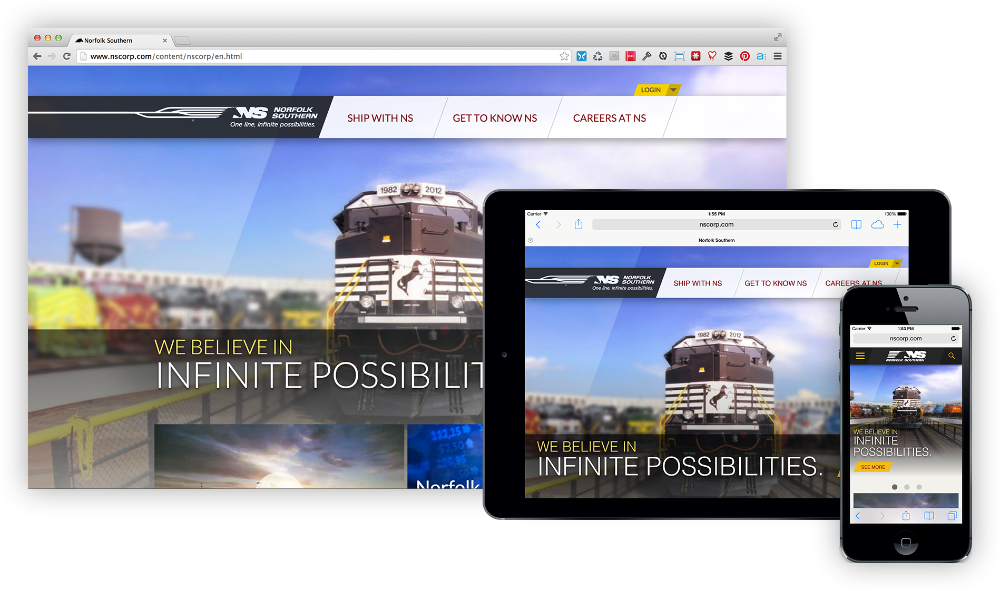
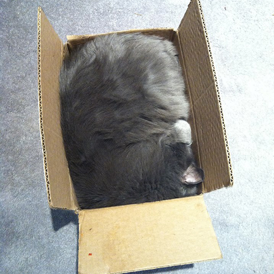

Building RWD with Sass:
The Tools You Need to Know About
Vote for Me!
Like this talk? Vote for it for the "Best Of":
Text to (504) 229-6828
#rwdsass 5 I loved it. It was much better than "Cats". I'm going to see it again and again.
Tracy Rotton
- @taupecat
- Lead Web Developer for
RP3 Agency in Bethesda, Maryland
A little more about me:
- Front-end developer for 20 years (seriously)
- WordPress core contributor
- Built first responsive site in 2011
- Began using Sass in 2012
Prologue
http://rwjf.org (2011)
Tools Used:
- Vanilla CSS
- This guy…
- 80kB CSS file

.column_33 .dog-eared {
padding: 24px 8%; /* 24px / 300px */
}
@media all and (max-width: 620px) {
.column_33 .dog-eared {
padding: 24px 3.870967741935%; /* 24px / 620px */
}
}
#NeverAgain

http://nscorp.com (2013)
Tools Used:
- Sass
- Compass
- Home-grown Responsive Sass Library
- CodeKit
RWD Basics
- Fluid Layouts
- Flexible Images and Media
- Media Queries
Sass Basics
- Variables
- Functions
- Mixins
- Media Query Bubbling
RWD + Sass =
Fluid Grids
“Responsive Formula”
target / context = result (%)
Sass Tools for RWD
Built-in function: percentage(target / context)
Percentage returns a unitless number, expressed as a percentage.
Sass:
.main-content {
width: percentage(585px / 960px);
}
.sidebar {
width: percentage(350px / 960px);
}CSS:
.main-content {
width: 60.9375%;
}
.sidebar {
width: 36.45833%;
}Code becomes self-documenting.
Flexible Media and Images
Hold that thought…
Media Query Bubbling
This is the awesome sauce that makes responsive web design soooo much easier.

MQB: Padawan
SCSS:
.sidebar {
background-color: #e5e5e5;
font-size: 1.2em;
@media all and (min-width: 43.125em) { // 690px / 16px
float: left;
width: percentage(400px / 1280px);
}
}
MQB: Padawan
CSS:
.sidebar {
background-color: #e5e5e5;
font-size: 1.2em;
}
@media all and (min-width: 43.125em) {
.sidebar {
float: left;
width: 31.25%;
}
}
MQB: Jedi Knight
SCSS:
$default-browser-context: 16px !default;
@function em($target, $context: $default-browser-context) {
@return $target / $context * 1em;
}
$bp-medium: em(690px);
.sidebar {
background-color: #e5e5e5;
font-size: 1.2em;
@media all and (min-width: $bp-medium) {
float: left;
width: percentage(400px / 1280px);
}
}
MQB: Jedi Knight
CSS:
.sidebar {
background-color: #e5e5e5;
font-size: 1.2em;
}
@media all and (min-width: 43.125em) {
.sidebar {
float: left;
width: 31.25%;
}
}
MQB: Jedi Master
SCSS:
$default-browser-context: 16px !default;
@function em($target, $context: $default-browser-context) {
@return $target / $context * 1em;
}
$bp-medium: em(690px);
@mixin bp($breakpoint) {
@if $breakpoint == medium {
@media all and (min-width: $bp-medium) { @content; }
}
}
.sidebar {
background-color: #e5e5e5;
font-size: 1.2em;
@include bp(medium) {
float: left;
width: percentage(400px / 1280px);
}
}
Credit: css-tricks.com
MQB: Jedi Master
CSS:
.sidebar {
background-color: #e5e5e5;
font-size: 1.2em;
}
@media all and (min-width: 43.125em) {
.sidebar {
float: left;
width: 31.25%;
}
}
MQB: Beyond Viewport Widths
@mixin hidpi($media: all) {
@media
only #{$media} and (min--moz-device-pixel-ratio: 1.5),
only #{$media} and (-o-min-device-pixel-ratio: 3/2),
only #{$media} and (-webkit-min-device-pixel-ratio: 1.5),
only #{$media} and (min-device-pixel-ratio: 1.5),
only #{$media} and (min-resolution: 144dpi),
only #{$media} and (min-resolution: 1.5dppx) {
@content;
}
}
iPhone 6 & 6 Plus ???
“But won't repeated media queries bloat my CSS?”
- Gzipping
-
Grunt plugin
Gulp plugin
@extend +
%placeholder-selectors
Lets you aggregate your classes around a set of common properties.
%clearfix {
&:before, &:after {
content: "";
display: table;
}
&:after { clear: both; }
}
.site-header {
@extend %clearfix;
background-color: #1fbbe3;
}
.site-footer {
@extend %clearfix;
background-color: #757b82;
}
.site-header:before, .site-header:after,
.site-footer:before, .site-footer:after {
content: "";
display: table;
}
.site-header:after, .site-footer:after {
clear: both;
}
.site-header {
background-color: #1fbbe3;
}
.site-footer {
background-color: #757b82;
}
Doesn't work in @media queries:
.site-header {
background-color: #1fbbe3;
@include bp(medium) {
@extend %clearfix;
}
}
.site-footer {
background-color: #757b82;
@include bp(medium) {
@extend %clearfix;
}
}
@extend inside media query?
No CSS for you!
But going the other way?
%some-random-thing {
background-color: aliceblue;
@media only all and (min-width: 37.5em) {
background-color: purple;
}
@media only all and (min-width: 62.5em) {
background-color: tomato;
}
}
media query inside @extend?
Sure, no problem!
Libraries
Use the collective power of the Internet to drive your responsive project with Sass.
Susy
- Sass-based grid system
- Does the math, so you don't have to.
Floats vs. Isolate
- Floats:
The grid system you're probably used to. - Isolate:
Usesmargin-right: -100%to work around sub-pixel rendering problems. - Better explanation:
Responsive Design's Dirty Little Secret
But wait, there's more!
- Asymmetrical grids
- Different grids for different pages
Breakpoint
- Provides mixins similar to the "Jedi Master" method
- min-width, max-width, viewport ranges, screen resolution
But wait, there's more!
- Screen Resolution Media Queries
(HiDPI Displays) - Integration with Susy:
@include susy-breakpoint(30em, 8) {
// nested code uses an 8-column grid,
// starting at a 30em min-width breakpoint...
.example { @include span(3); }
}Fallbacks
Fallback Options
- "Mobile" view (a.k.a., ignore it)
- Respond.js
- Modernizr + Breakpoint
Epilogue
http://rp3agency.com (2014)
Tools Used:
- Sass
- Compass,
Susy,
Breakpoint - Gulp
Wanna learn more?
Responsive Web Design
More Resources:
Sass
Even More Resources
- Building Web Layouts Easily with Susy
on CSS Tricks - Managing Responsive Breakpoints with Sass
on Sitepoint